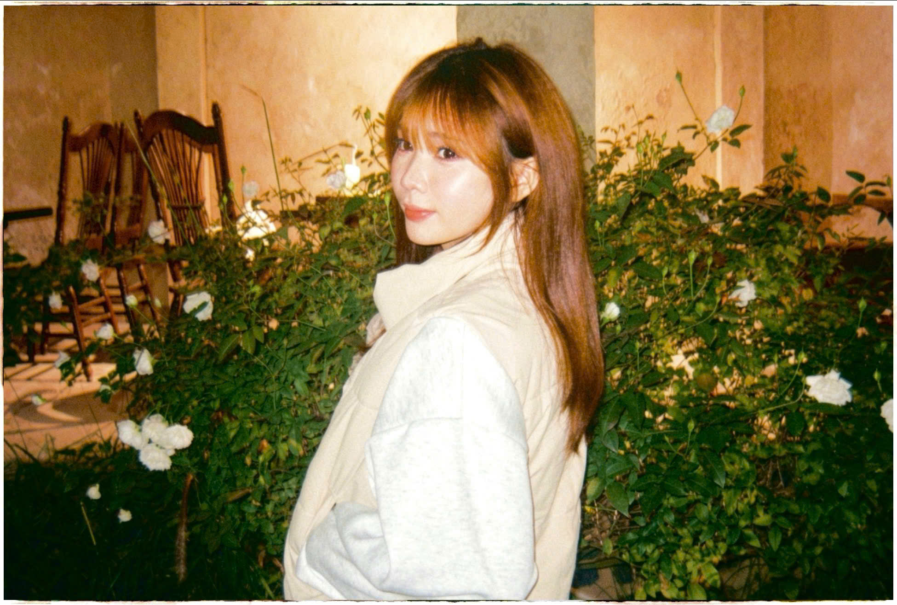
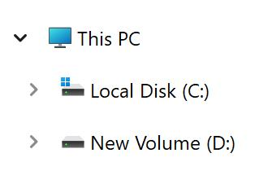
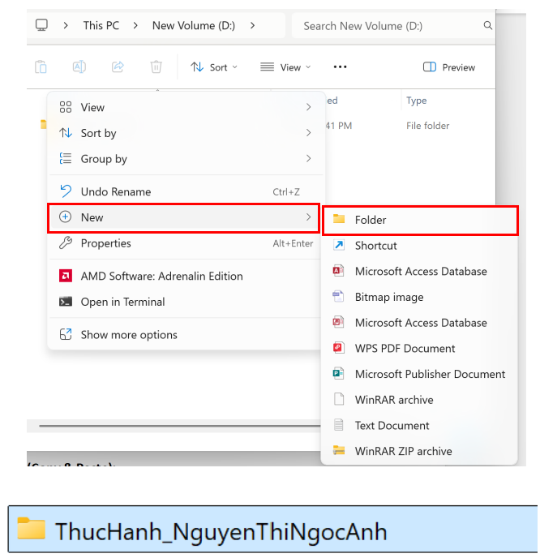
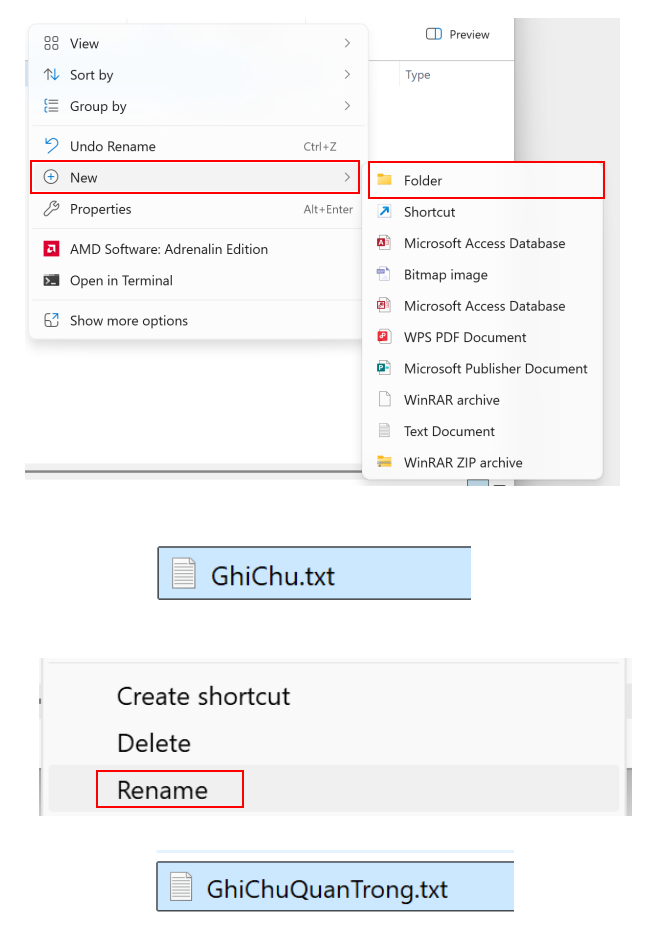
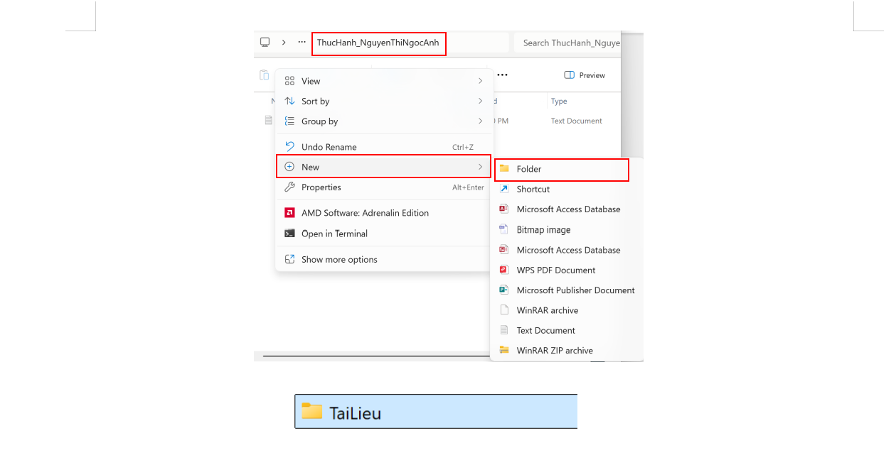
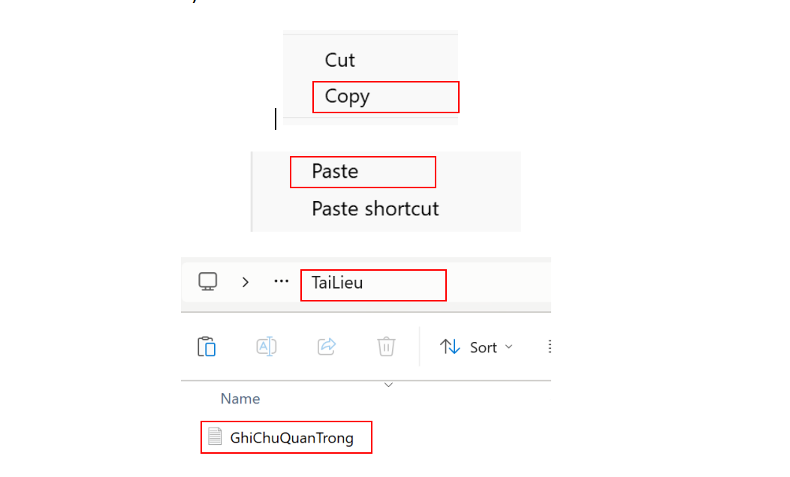
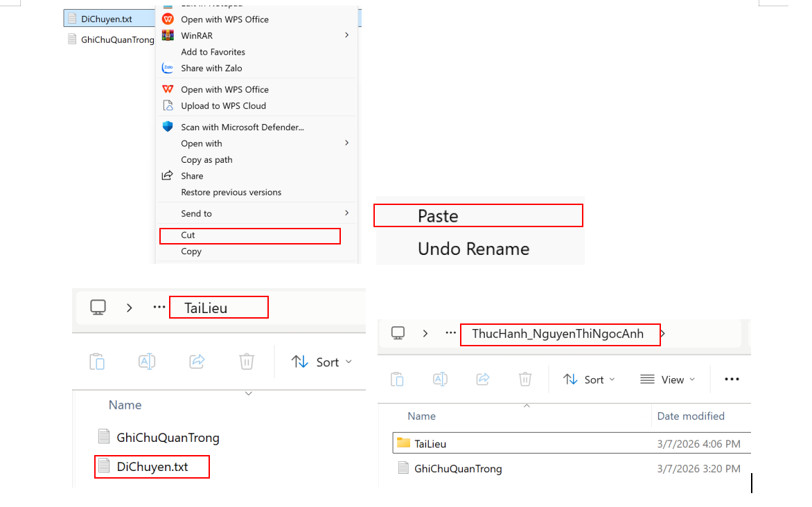
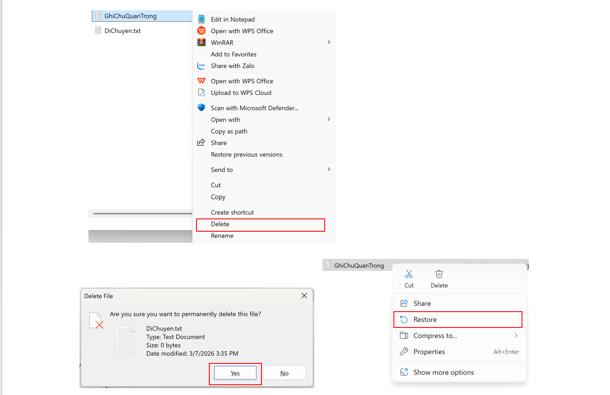
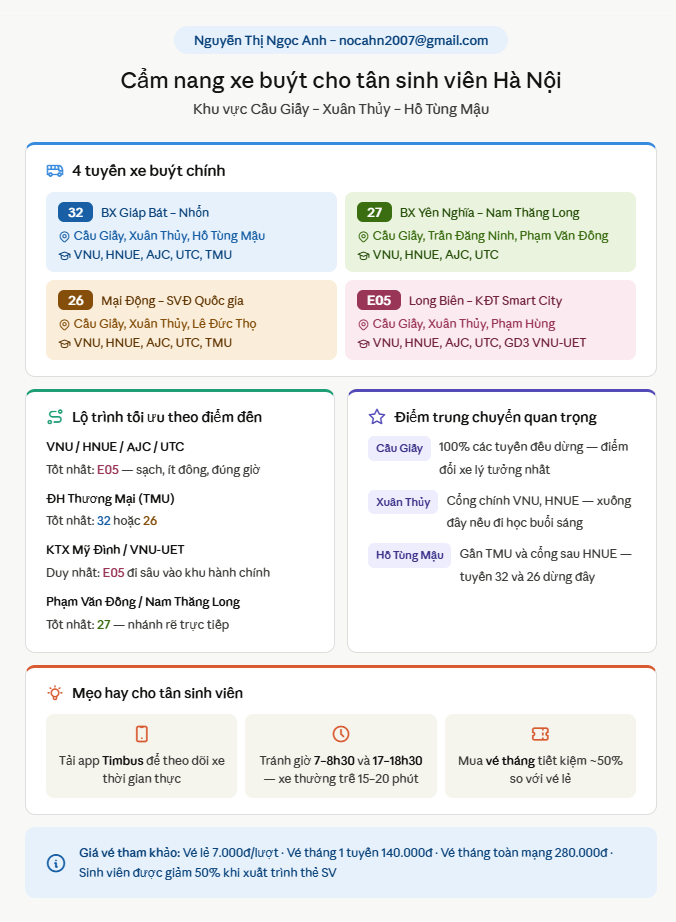
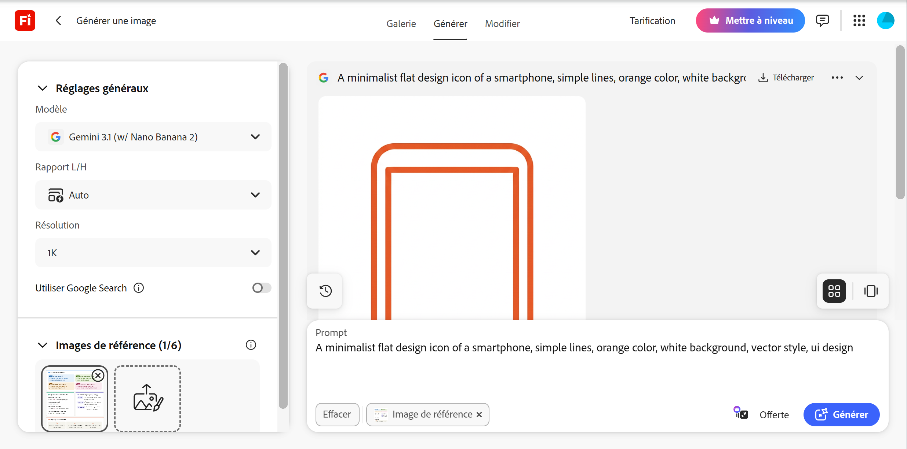

Sinh viên ngành Khoa học Dữ liệu – Đây là tổng hợp các kỹ năng số em đã xây dựng qua hành trình học tập.

Em hiện là sinh viên năm nhất tại Trường Đại học Công nghệ, theo học ngành Khoa học Dữ liệu. Em có niềm đam mê với công nghệ thông tin và trí tuệ nhân tạo, luôn muốn khám phá những ứng dụng thực tiễn của kỹ năng số trong cuộc sống và học tập.
Tập hợp các nhiệm vụ học tập từ Tuần 1 đến Tuần 7 – nhấn Xem chi tiết để đọc bài tập đầy đủ.
Thực hành toàn bộ thao tác quản lý tệp trên Windows: tạo, đổi tên, sao chép, di chuyển, xóa và khôi phục tệp từ Recycle Bin.
Nghiên cứu ứng dụng Deep Learning trong dự báo chuỗi thời gian cho Smart Grid. Tổng hợp 10 tài liệu từ Google Scholar, IEEE Xplore, ScienceDirect.
So sánh 3 mức độ Prompt (Cơ bản → Cải tiến → Nâng cao) trên 3 tác vụ học tập thực tế. Nguyên tắc C-C-R-F và kỹ thuật Chain-of-Thought.
Triển khai bộ công cụ 4 lớp: Trello Kanban, Google Docs, Google Drive, Zalo. Phân tích và giải quyết 3 thách thức thực tế của nhóm.
Thiết kế Infographic Cẩm nang xe buýt cho tân sinh viên Hà Nội – khu vực Cầu Giấy. Kết hợp ChatGPT, Adobe Firefly và Canva Magic Design.
Phân tích chính sách AI học thuật, thực hành prompting có kiểm soát và xây dựng 6 nguyên tắc cá nhân về sử dụng AI có trách nhiệm.
Tổng hợp 6 bài báo (2022–2025) về chất điện phân rắn và vật liệu Composite trong pin Lithium kim loại. Sử dụng Elicit và Consensus.
Tổng hợp những kỹ năng tích lũy, bài học rút ra và định hướng phát triển sau 7 tuần học.
Nguyên tắc C-C-R-F và kỹ thuật Chain-of-Thought giúp kiểm soát hoàn toàn đầu ra — cùng một AI, cùng một câu hỏi, Prompt khác nhau cho kết quả hoàn toàn khác nhau.
AI có thể hallucinate bất kỳ lúc nào — từ lộ trình xe buýt đến số liệu khoa học. Đối chiếu với nguồn chính thống trước khi sử dụng là nguyên tắc không thể bỏ qua.
Trello, Google Docs, Drive chỉ thực sự phát huy tác dụng khi có quy ước rõ ràng trong nhóm. Công nghệ không tự giải quyết vấn đề — con người và quy trình mới là yếu tố quyết định.
Dự án đầu tiên tích hợp kiến thức liên tuần — kỹ năng hợp tác (Tuần 4) kết hợp với AI tạo sinh (Tuần 5) để tạo ra sản phẩm thực tế phục vụ cộng đồng tân sinh viên Hà Nội.
Học Python cơ bản và pandas — kết hợp với kỹ năng tìm kiếm học thuật đã có để phục vụ các môn chuyên ngành Khoa học Dữ liệu sắp tới.
Sử dụng thành thạo Elicit và Consensus để đọc nhanh tài liệu nghiên cứu, xây dựng nền tảng cho các môn học chuyên ngành và đề tài năm 3–4.
Kết hợp kỹ năng phân tích dữ liệu, tìm kiếm học thuật và AI tạo sinh để thực hiện đề tài nghiên cứu độc lập trong lĩnh vực Khoa học Dữ liệu.
Khóa học này không chỉ dạy em dùng công cụ — mà dạy em tư duy về công cụ. Hiểu khi nào nên dùng AI, khi nào cần tự làm, và luôn chịu trách nhiệm với kết quả cuối cùng là bộ kỹ năng em sẽ mang theo suốt sự nghiệp.
Thực hành toàn bộ thao tác quản lý tệp tin trên hệ điều hành Windows: tạo thư mục phân cấp, đổi tên, sao chép, di chuyển, xóa tạm thời, xóa vĩnh viễn và khôi phục tệp từ Recycle Bin. Thiết lập cấu trúc thư mục ThucHanh_hotensinhvien theo quy trình từng bước rõ ràng.
Nhấn tổ hợp phím Windows + E hoặc nhấp vào biểu tượng thư mục màu vàng trên thanh tác vụ. Ở cột bên trái, nhấp vào This PC, sau đó nhấp đúp vào ổ đĩa không phải ổ hệ thống (ổ D: hoặc E:). Nếu chỉ có ổ C:, vào thư mục Documents.

🖼️File Explorer – This PCNhấp chuột phải vào khoảng trống → chọn New → Folder. Đặt tên thư mục là ThucHanh_NguyenThiNgocAnh. Nhấn Enter.

🖼️Tạo thư mục mớiGhiChu.txt. Nhấn Enter.GhiChu.txt → chọn Rename. Đổi tên thành GhiChuQuanTrong.txt. Nhấn Enter.
🖼️Đổi tên tệp tinTrong thư mục ThucHanh_NguyenThiNgocAnh, nhấp chuột phải → New → Folder. Đặt tên là TaiLieu.

🖼️Tạo thư mục con TaiLieuGhiChuQuanTrong.txt → chọn Copy (hoặc nhấn Ctrl + C).TaiLieu, nhấp chuột phải vào khoảng trống → chọn Paste (hoặc nhấn Ctrl + V).TaiLieu.
🖼️Sao chép tệp tin vào TaiLieuThucHanh_NguyenThiNgocAnh. Tạo tệp mới tên là DiChuyen.txt.TaiLieu, nhấp chuột phải → Paste (hoặc Ctrl + V). Tệp gốc biến mất khỏi vị trí cũ.
🖼️Di chuyển tệp DiChuyen.txtGhiChuQuanTrong.txt → nhấp chuột phải → Restore.
🖼️Khôi phục tệp từ Recycle BinỨng dụng Học sâu (Deep Learning) trong dự báo chuỗi thời gian cho dữ liệu năng lượng thông minh (Smart Grid)
| STT | Tên tài liệu | Tác giả / Nơi xuất bản | Phương pháp | Năm | Độ tin cậy | Xếp hạng |
|---|---|---|---|---|---|---|
| 1 | Empirical evaluation of gated recurrent neural networks | Chung, J. / arXiv | So sánh hiệu năng | 2014 | ★★★ | Trung bình |
| 2 | Deep Learning (Sách) | Goodfellow / MIT Press | Lý thuyết nền tảng | 2016 | ★★★★★ | Rất cao |
| 3 | Deep Learning Model for Household Load Forecasting | Shi, H. / IEEE | Thực nghiệm & Đối soát | 2018 | ★★★★★ | Rất cao |
| 4 | Applications of deep learning in modern power systems | Zhao, Z. / Elsevier | Tổng quan (Review) | 2020 | ★★★★★ | Rất cao |
| 5 | Forecasting: principles and practice | Hyndman / OTexts | Thống kê & Kiểm chứng | 2018 | ★★★★★ | Rất cao |
| 6 | Time series forecasting from scratch | Keras Team / Keras Doc | Hướng dẫn kỹ thuật | 2024 | ★★★ | Trung bình |
| 7 | Predicting residential energy using CNN-LSTM | Kim & Cho / Energy Journal | Mô hình Hybrid | 2019 | ★★★★ | Cao |
| 8 | AI in Energy Management Systems | Krastev / JMPSCE | Phân tích xu hướng | 2023 | ★★★★ | Cao |
| 9 | Attention is all you need | Vaswani et al. / Google | Đề xuất kiến trúc mới | 2017 | ★★★★★ | Rất cao |
| 10 | Electric load forecasting based on LSTM | Zheng, J. / Energies | Thực nghiệm cụ thể | 2017 | ★★★★ | Cao |
Để một Prompt đạt hiệu quả cao nhất, cần đảm bảo cấu trúc C-C-R-F:
Tài liệu: Bài báo "Climate Change and Food Security: Risks and Responses" (Tubiello et al.)
Khái niệm: Cơ chế đồng thuận Proof of Work trong Blockchain
Chủ đề: Cách mạng Công nghiệp lần thứ nhất (cuối thế kỷ 18 – đầu thế kỷ 19)
| Tiêu chí | Prompt Cơ bản | Prompt Cải tiến | Prompt Nâng cao |
|---|---|---|---|
| Độ chính xác | Trung bình | Khá | Rất cao |
| Độ hữu dụng | Thấp (cần chỉnh nhiều) | Cao | Rất cao (dùng được ngay) |
| Khả năng kiểm soát | Thấp | Trung bình | Rất cao |
Trước khi dùng Trello, công việc được ghi vào ghi chú điện thoại hoặc giấy tờ rời rạc – dễ bỏ sót, không có ưu tiên rõ ràng. Với Kanban, toàn bộ luồng công việc được hình dung trực quan. Tính năng Due Date + Calendar Power-Up tự động nhắc deadline. Chia nhỏ nhiệm vụ thành checklist giúp không bị "ngợp" trước đầu việc phức tạp.
Trong tuần thực hiện dự án, Trello được cập nhật 7 lần – board luôn phản ánh đúng tiến độ thực tế.
Giải quyết triệt để vấn đề "gửi file qua lại nhiều phiên bản". Chỉ một link, mọi thành viên làm việc trên cùng tài liệu. Tính năng Version History cho phép xem lại lịch sử chỉnh sửa theo từng người, từng thời điểm. Comment cho phép góp ý ngay tại đoạn văn liên quan, tiết kiệm thời gian giải thích trên Zalo.
Đóng vai trò "kho lưu trữ trung tâm". Cấu trúc thư mục rõ ràng giúp bất kỳ thành viên nào tìm đúng tệp trong vài giây. Khả năng truy cập đa thiết bị: soạn thảo trên máy tính ở nhà, tiếp tục chỉnh sửa trên điện thoại khi di chuyển.
Công cụ quen thuộc nhất với tất cả thành viên – không cần cài thêm app. Tốc độ phản hồi nhanh (vài phút), phù hợp giao tiếp ngắn hạn. Lưu ý: không nên dùng để lưu tài liệu hoặc quyết định quan trọng vì tin nhắn dễ trôi, file chia sẻ hết hạn tải sau một thời gian.
Ngày 16/4: Link Google Docs đã chia sẻ bị "trôi" xuống rất xa trong luồng chat. Một thành viên không tìm được link và phải hỏi lại – gây gián đoạn công việc.
Zalo không có cơ chế phân loại tin nhắn theo chủ đề. Khi nhóm vừa trao đổi công việc vừa "tán gẫu", thông tin quan trọng dễ lẫn lộn.
Từ ngày 16/4 không còn tình trạng hỏi lại link. Tiết kiệm 5–10 phút/ngày.
Board Trello không phản ánh đúng thực tế – một số thành viên hoàn thành việc nhưng thẻ vẫn nằm ở cột "Đang làm". Phải hỏi lại tiến độ trên Zalo, tạo vòng lặp không hiệu quả.
Cập nhật Trello chưa thành thói quen. Sau khi hoàn thành việc, mọi người thường quên bước này.
Từ ngày 17/4, board Trello được đồng bộ tốt hơn, giảm hẳn số lần hỏi lại tiến độ.
Tài liệu tổng hợp lộn xộn về font: người dùng Times New Roman 14pt, người Arial 12pt, người Calibri 13pt. Thiếu chuyên nghiệp, mất thêm thời gian định dạng lại cuối bài.
Nhóm không thống nhất quy chuẩn trình bày từ đầu.
Tài liệu cuối đạt tính đồng nhất về trình bày, không phải "dọn dẹp" định dạng ở bước nộp bài.
Khu vực: Cầu Giấy – Xuân Thủy – Hồ Tùng Mậu (cụm trường ĐH: VNU, HNUE, AJC, UTC, TMU)
Bộ công cụ AI kết hợp:

🖼️Infographic hoàn chỉnh – Cẩm nang xe buýt tân sinh viênĐầu ra AI: Liệt kê hơn 10 tuyến (32, 26, 27, 34, 16, E05...). Mẹo khá chung chung.
Cá nhân hóa: Chọn lọc 4 tuyến trọng điểm (32, 27, 26, E05), nhóm theo thẻ màu. Biên tập mẹo bằng kinh nghiệm thực tế: thêm app TimBus, tránh khung giờ 7–8h30 và 17–18h30, nêu giá vé lẻ 7.000đ / vé tháng 140.000đ/tuyến + giảm 50% cho sinh viên.
Đầu ra AI: Biểu tượng thiết kế phẳng, hiện đại, sạch sẽ.
Cá nhân hóa: Xóa nền, đồng bộ màu cam-đỏ để nhất quán với Infographic. Tương tự cho icon đồng hồ, bóng đèn.

🖼️Bộ icon Flat design do Firefly tạoĐầu ra AI: Khung layout chia khối rõ ràng, hộp văn bản bo góc.
Cá nhân hóa: Phân bổ lại 3 khu vực (4 tuyến xe buýt / Lộ trình-Điểm trung chuyển / Mẹo hay). Tự thiết lập mã màu: Xanh dương–32, Xanh lá–27, Cam–26, Đỏ đô–E05. Hoàn thiện Visual Hierarchy.
| Công cụ | Điểm mạnh | Hạn chế |
|---|---|---|
| ChatGPT / Gemini | Tổng hợp dữ liệu cực nhanh, gom nhóm thông tin trong vài giây | Hallucination: có thể nhầm lộ trình E05 (VinBus điện) với xe buýt truyền thống. Bắt buộc phải Fact-check qua app TimBus. |
| Adobe Firefly | Tạo icon đồng nhất về phong cách, nhanh hơn tìm trên Flaticon/Freepik | Đôi khi icon quá phức tạp, phải chỉnh sửa để đảm bảo tính tối giản. |
| Canva AI | Xử lý Grid system rất tốt, phân bổ không gian hợp lý dù nhiều thông tin | Không tự động hóa được Visual Hierarchy – con người vẫn phải quyết định chữ nào in đậm, màu nào làm tiêu đề. |
Với nội dung hướng dẫn cộng đồng (giao thông công cộng), nếu AI đưa thông tin sai và người thiết kế không kiểm chứng, hàng trăm tân sinh viên có thể đi lạc. Kiểm chứng dữ liệu AI bằng nguồn chính thống là nguyên tắc đạo đức tối thượng.
AI đóng góp ~40% (xử lý dữ liệu + gợi ý layout). Con người đóng góp ~60% (fact-check, logic nhóm thông tin, thẩm mỹ). Để tên tác giả ở đầu Infographic và khai báo rõ sự tham gia của AI.
Dự án "Cẩm nang xe buýt" chứng minh AI là trợ lý đắc lực trong xử lý thông tin thô và gợi ý thiết kế. Tuy nhiên, tính chính xác của dữ liệu thực tế và tư duy thấu cảm (hiểu sinh viên cần gì, màu sắc nào dễ nhớ) hoàn toàn phụ thuộc vào năng lực của người sáng tạo nội dung.
Sinh viên được phép dùng AI như công cụ hỗ trợ (tìm ý tưởng, kiểm tra ngữ pháp) nhưng phải trích dẫn rõ ràng: phần mềm nào, khâu nào, mục đích gì.
Sinh viên chịu trách nhiệm cuối cùng về tính chính xác, đạo đức và tính nguyên bản. Mọi thiếu chính xác do "ảo giác AI" trong bài nộp đều do sinh viên chịu trách nhiệm.
Tuyệt đối không dùng AI tạo toàn bộ hoặc phần lớn nội dung bài tập, đoạn code, bài luận rồi nộp dưới tên mình. Hành vi này vi phạm nghiêm trọng liêm chính học thuật.
OpenAI. (2026). ChatGPT (Phiên bản GPT-4) [Mô hình ngôn ngữ lớn]. https://chat.openai.com. (Công cụ được sử dụng để hỗ trợ tóm tắt lý thuyết độ phức tạp thuật toán và phân tích trường hợp xấu nhất của Quick Sort).
Sự khác biệt nằm ở mức độ tham gia của tư duy con người:
Mô hình ngôn ngữ lớn được đào tạo trên dữ liệu có bản quyền nhưng hiếm khi trích dẫn nguồn gốc. Sao chép nguyên văn đầu ra AI → vi phạm bản quyền gián tiếp.
Phụ thuộc quá mức vào AI → teo tóp tư duy phản biện. Mất kỹ năng phân tích hệ thống và giải quyết vấn đề độc lập – cốt lõi cần thiết trong Khoa học Dữ liệu và các ngành kỹ thuật.
Luôn tự thiết lập dàn ý, luận điểm và logic cốt lõi trước khi nhờ AI góp ý hoặc mở rộng nội dung.
Không tin tuyệt đối số liệu, trích dẫn khoa học hoặc sự kiện lịch sử do AI cung cấp nếu chưa đối chiếu với IEEE Xplore, Google Scholar.
Luôn ghi chú rõ ràng các công đoạn có sử dụng AI trong bài tập, tiểu luận, báo cáo thực hành.
Không nhập dữ liệu riêng tư, bộ dữ liệu nghiên cứu chưa công bố, hoặc mã nguồn nội bộ lên các nền tảng AI công cộng.
Khi dùng AI giải bài toán khó, mục tiêu là hiểu "Tại sao giải như vậy?" thay vì chỉ lấy đáp án cuối cùng.
Đảm bảo văn phong và góc nhìn trong bài luận phản ánh đúng quan điểm cá nhân – không để AI đồng hóa phong cách viết.
Ứng dụng của chất điện phân rắn và vật liệu Composite trong việc ức chế sợi nhánh dendrite và nâng cao tính an toàn của pin Lithium kim loại.
Việc sử dụng và tinh chỉnh cấu trúc chất điện phân rắn (vô cơ, polymer, hoặc composite vô cơ-hữu cơ) tác động như thế nào đến: khả năng ngăn chặn sợi nhánh Lithium, độ dẫn ion ở nhiệt độ phòng, và tính an toàn cháy nổ của pin?
Đây là chủ đề hẹp, chuyên sâu và tiềm năng lớn trong lĩnh vực năng lượng – giải quyết bài toán cháy nổ của chất điện phân lỏng truyền thống và mở đường cho thế hệ pin lưu trữ năng lượng mật độ cao.
| STT | Bài báo & Tác giả (Năm) | Phương pháp & Vật liệu | Mục tiêu | Kết quả chính | Hạn chế |
|---|---|---|---|---|---|
| 1 | Blocking Lithium Dendrite Growth with Ultrathin Amorphous Li-La-Zr-O – ChemRxiv (2023) | Màng mỏng LLZO vô định hình (70nm), phún xạ Magnetron | Chặn hoàn toàn dendrite trong pin thể rắn | Dẫn ion 10⁻⁷ S/cm; chặn đâm xuyên dendrite ở 1.3 mA/cm² | Phún xạ Magnetron phức tạp, khó mở rộng quy mô sản xuất |
| 2 | Chemo-Mechanical Challenges in Solid-State Batteries – McDowell et al. (2022) | Phân tích tổng quan & mô phỏng hóa-cơ học bề mặt LLZO/Lithium | Hiểu cơ chế cơ học dẫn đến sợi nhánh | Lithium biến dạng rão (creep) qua lỗ hổng/ranh giới hạt LLZO do chênh lệch ứng suất | Cần thêm thí nghiệm in-situ ở thang nano |
| 3 | Application of Li₃InCl₆-PEO Composite Electrolyte – MDPI (2023) | Slurry casting, composite Halide (Li₃InCl₆) + PEO hữu cơ | Tăng tính linh hoạt cơ học & chịu độ ẩm của điện phân Halide | Dẫn ion 1.19 mS/cm ở 35°C; >80% dung lượng sau 150 chu kỳ | Vết nứt vi mô sau nhiều chu kỳ làm tăng điện trở nội |
| 4 | Structural Effect of Composite Solid Electrolyte on Fire Safety – MDPI (2024) | 1D Al-LLZO + ma trận polymer PVDF-HFP; thử nghiệm đốt cháy | Đánh giá tác động cấu trúc composite lên dẫn ion & chống cháy | Dẫn 1.4×10⁻⁴ S/cm; cell đối xứng ổn định >2000 giờ; chống cháy hoàn toàn | Tỷ lệ vô cơ thấp giới hạn độ cứng cơ học so với ceramic dạng khối |
| 5 | Multifunctional Double-Layer Composite Solid Electrolyte – ACS (2025) | Màng composite hai lớp không đối xứng | Nâng cao ổn định điện hóa ở điện áp cao | Giảm phân cực bề mặt, ổn định với cực âm điện áp cao | Khó duy trì kết dính vật lý giữa hai lớp sau thời gian dài vận hành |
| 6 | Flexible Asymmetric Organic-Inorganic Composite based on PI Membrane – Frontiers (2022) | Phủ hữu cơ-vô cơ không đối xứng lên màng nền Polyimide (PI) | Màng dẻo dai, bền vững, hoạt động tốt ở nhiệt độ môi trường | Dung lượng phóng điện cao; Hiệu suất Coulombic 98%; tính dẻo dai cơ học tốt | Màng PI giá thành cao, cần tối ưu quy trình để cạnh tranh |
Nghiên cứu (3), (4), (5), (6) đều cho thấy sự đồng thuận lớn: không có vật liệu đơn lẻ nào hoàn hảo. Polymer (PEO, PVDF) dẻo dai nhưng dẫn ion kém & chịu nhiệt thấp. Gốm (LLZO, Halide) dẫn ion tốt, chống cháy nhưng giòn & nặng. Composite Solid Electrolyte kết hợp ưu điểm của cả hai.
Sợi nhánh dendrite hình thành chủ yếu từ sự không đồng đều ở bề mặt phân cách kim loại/điện phân (Bài 2). Giải pháp phủ màng vô định hình siêu mỏng (Bài 1) hoặc màng kép không đối xứng (Bài 5, 6) chứng minh hiệu quả vượt trội trong việc điều phối dòng ion Li⁺ và chặn đứng dendrite ngay từ giai đoạn mầm mống.